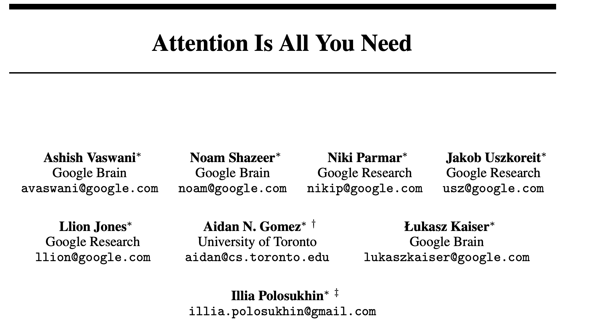
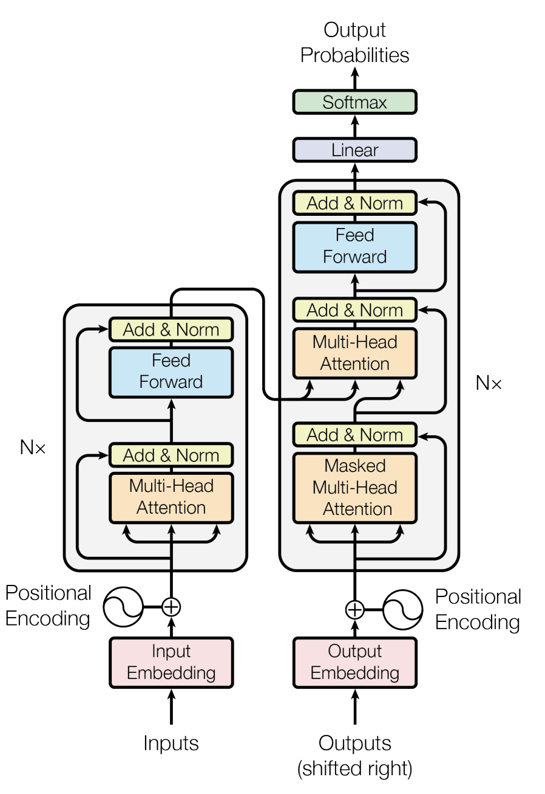
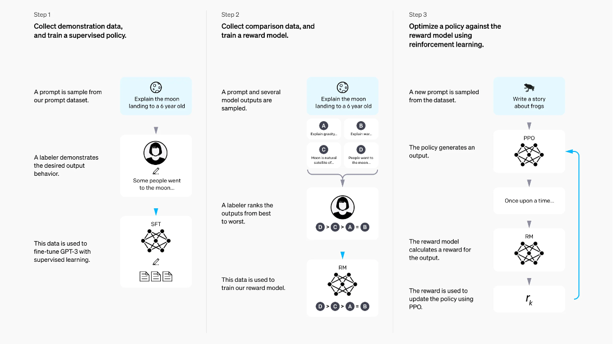
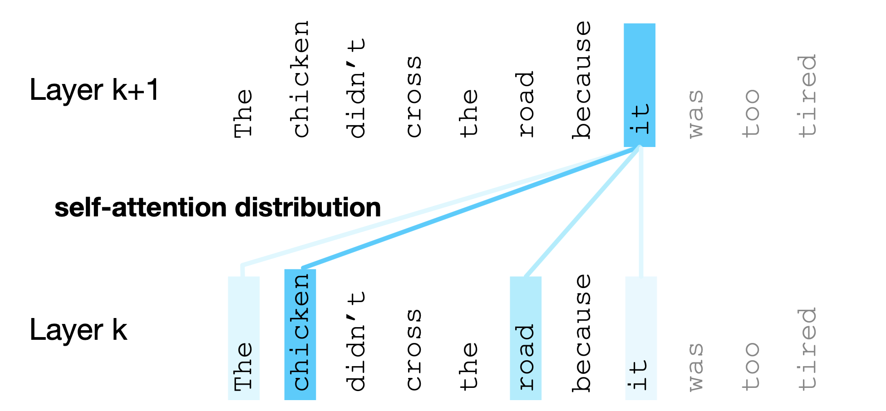
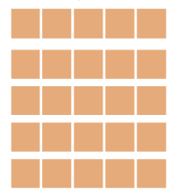
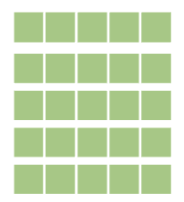
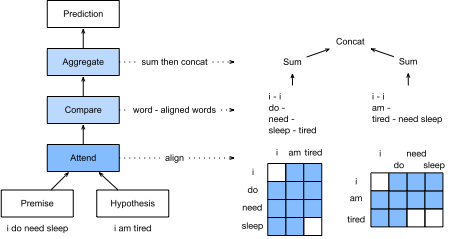

# CMSC 25700/35100: ## Natural Language Processing ## Lecture 6: The NLP Recipe and Attention Mechanisms <p style="text-align: center;"> <strong>Chenhao Tan</strong><br/> University of Chicago<br/> @ChenhaoTan, @chenhaotan.bsky.social<br/> chenhao@uchicago.edu </p> <a href="https://github.com/uchicago-nlp-course/winter-2025-students/issues/1">Submit Music Recommendations</a>, kudos to Mina Lee <br> <a href="https://github.com/uchicago-nlp-course/winter-2025-students/issues/2">Submit jokes</a> </p>
## Logistics * Project team formation ongoing * Waitlist and A1
## Lecture Outline 1. The NLP recipe continued 2. A bird-eye view of the rest of the course 3. Self attention 4. Attention Variants
## Lecture Outline 1. **The NLP recipe continued** 2. <span style="opacity: 0.3;">A bird-eye view of the rest of the course</span> 3. <span style="opacity: 0.3;">Self attention</span> 4. <span style="opacity: 0.3;">Attention Variants</span>
## Vectorization Always use vectors and matrices rather than for loops! ```python # Looping: 639 us per loop [W.dot(wordvectors_list[i]) for i in range(N)] # Matrix: 53.8 us per loop W.dot(wordvectors_one_matrix) ``` Speed gain is 1-2 orders of magnitude with GPUs!
## Experimental Practice Data splits: Train / Dev / Test - Train: Learn parameters - Dev: Tune hyperparameters, select models - Test: Final evaluation only Golden rule: Never use test set for model selection!
## Experimental Practice (cont.) Hyperparameter tuning: - Learning rate, batch size, hidden dimensions, dropout rate, etc - Use dev set to compare configurations
## Experimental Practice (cont.) Reproducibility: - Set random seeds - Report variance across runs - Document all hyperparameters Statistical significance: - Is improvement real or due to chance? - Use multiple runs, report confidence intervals
## What We Do Not Cover (But Is Important) Some topics we will not dive deep into: * Scaling: Distributed training, data/model/tensor parallelism * Optimization theory: Why Adam works, loss landscapes * Debugging: Diagnosing training failures, gradient issues * Data pipelines: Preprocessing, filtering, deduplication at scale * Efficient training: Mixed precision, gradient checkpointing * Efficient inference: Quantization, distillation, KV caching * Infrastructure: GPU clusters, cloud platforms, job scheduling
## Lecture Outline 1. <span style="opacity: 0.3;">The NLP recipe continued</span> 2. **A bird-eye view of the rest of the course** 3. <span style="opacity: 0.3;">Self attention</span> 4. <span style="opacity: 0.3;">Attention Variants</span>
## Looking Ahead: The Rest of This Course Organized by the NLP recipe: | Component | Upcoming Lectures | |-----------|-------------------| | Model: Architecture | Attention, Transformers | | Model: Learning | Pretraining, Post-training (RLHF) | | Model: Inference | Decoding, Prompting | | Evaluation | Benchmarks and Evaluation | | Applications | Reasoning, Agents, Multimodal | | Special Topics | Alignment and Safety |
## Two central ideas before Applications * Modern LLMs are built on the transformer architecture * Modern LLMs are trained with a multi-stage pipeline
## LLMs are Built on Transformers <p></p> <p class="citation"><a href="https://arxiv.org/abs/1706.03762">Attention Is All You Need</a> by Vaswani et al. (2017)</p>
## LLMs are Built on Transformers Transformer: A network architecture based on attention - Replaces recurrence with Self attention - Enables parallel processing - Handles long-range dependencies <p class="citation"><a href="https://arxiv.org/abs/1706.03762">Attention Is All You Need</a> by Vaswani et al. (2017)</p>
## A Tour of the Transformer <div style="display: flex; align-items: center;"> <div style="flex: 1;"> Key components we will cover: - Tokenization and Input Embeddings - Position Encodings - Attention (Query, Key, Value) - Feed Forward layers - Add & Norm (residual connections + layer norm) - Encoder - Decoder </div> <div style="flex: 1; text-align: center;"> <p></p> </div> </div>
## A Tour of the Transformer <div style="display: flex; align-items: center;"> <div style="flex: 1;"> Key components we will cover in this lecture: Attention in decoder-only transformers </div> <div style="flex: 1; text-align: center;"> <img src="images/one_view_cropped.jpg" alt="Transformer architecture" style="max-width: 100%;"> <p class="citation"><a href="https://cameronrwolfe.substack.com/p/decoder-only-transformers-the-workhorse">Decoder-Only Transformers: The Workhorse of Generative LLMs</a></p> </div> </div>
## The Modern Training Pipeline Pretrain -> Finetune -> RLHF Three key stages in building modern LLMs: 1. Pre-training: Learn from large general data 2. Fine-tuning: Adapt to specific tasks and instruction following 3. RLHF: Align with human preferences
## Stage 1: Pre-training - Input: Large general dataset + Transformer architecture - Process: Language modeling - Output: Pre-trained transformer model Lots of data, learn general things. May serve as parameter initialization. Usually requires significant computational resources and time.
## Stage 2: Fine-tuning - Input: Pre-trained model + Smaller task-specific dataset - Process: Task-specific training - Output: Fine-tuned transformer model Adaptation to the specific task. Potentially less computationally intensive.
## Stage 3: Reinforcement Learning from Human Feedback (RLHF) <div style="flex: 1; text-align: center;"> <p></p> <p class="citation"><a href="https://arxiv.org/abs/2203.02155">Training language models to follow instructions with human feedback<a> by Ouyang et al. 2022</p> </div> </div>
## Stage 3 Alternative: Reinforcement Learning from Verifiable Rewards (RLVR) Instead of human feedback, use automatically verifiable rewards Examples of verifiable tasks: - Math problems (check if answer is correct) - Code generation (run tests) - Formal proofs (verify with proof checker) Advantages: - Scalable: no human labelers needed - Consistent: no inter-annotator disagreement - Can generate unlimited training signal <p class="citation"><a href="https://arxiv.org/abs/2501.12948">DeepSeek-R1 incentivizes reasoning in LLMs through reinforcement learning</a> by DeepSeek-AI 2026</p>
## Data, Model, Evaluation: Then and Now Traditional (what we covered): - Labeled data → Train classifier → Use Modern paradigm: - Large unlabeled data → Pretrain LM → Fine-tune or prompt This shift does not change the core role of data, model, and evaluation, but it does change how we think about them!
## Lecture Outline 1. <span style="opacity: 0.3;">The NLP recipe continued</span> 2. <span style="opacity: 0.3;">A bird-eye view of the rest of the course</span> 3. **Self attention** 4. <span style="opacity: 0.3;">Attention Variants</span>
## The Bottleneck Problem In recurrent language models, the hidden state must carry all context from previous tokens. Problems: - Information bottleneck: Fixed-size hidden state limits memory - Early tokens must flow through all intermediate states to influence later predictions - Context from the beginning of long sequences gets "forgotten" The hidden state needs to capture all relevant information from the entire prefix!
## Issues with Recurrent Models Linear Interaction Distance: - RNNs are unrolled left-to-right - Takes O(sequence length) steps for distant words to interact - Hard to learn long-distance dependencies (gradient problems) Lack of Parallelizability: - Forward/backward passes have O(sequence length) sequential operations - Future hidden states depend on past hidden states - Cannot fully utilize GPU parallelism
## Self attention: The Solution Core idea: Allow each token to directly attend to all previous tokens in the sequence. - No recurrence needed: Process all positions in parallel - Direct access: Any token can directly "look at" any other token - Solves the bottleneck: No need to compress everything into a fixed-size state <p class="citation">Vaswani et al. (2017): Attention Is All You Need</p>
## Self attention Benefits Compared to RNNs: | Aspect | RNN | Self attention | |--------|-----|----------------| | Interaction distance | O(n) | O(1) | | Parallelization | Sequential | Fully parallel | | Long-range dependencies | Difficult | Direct | All words interact at every layer with O(1) path length!
## Self attention: The Equation $$\operatorname{Attention}(Q, K, V) = \operatorname{softmax}\left(\frac{QK^T}{\sqrt{d_k}}\right)V$$ where $Q = XW^Q$, $K = XW^K$, $V = XW^V$ Let's unpack this equation step by step.
## Queries, Keys, and Values Think of attention as a soft dictionary lookup: - Query ($q$): "What am I looking for?" - Key ($k$): "What do I contain?" - Value ($v$): "What do I return if matched?" The attention score $q^T k$ measures how well a query matches a key. High score = high relevance = more weight on that value.
## Attention at One Position For position $t$, compute its output by attending to all positions: 1. Compute query, keys, values: $q_t = W^Q x_t, \quad k_j = W^K x_j, \quad v_j = W^V x_j$ 2. Compute attention scores: $e_{tj} = \frac{q_t^T k_j}{\sqrt{d_k}}$ 3. Softmax to get attention weights: $\alpha_{tj} = \operatorname{softmax}(e_{tj})$ 4. Weighted sum of values: $o_t = \sum_j \alpha_{tj} v_j$
## A Concrete Example The chicken didn't cross the road because it was too tired.
## A Concrete Example Coreference resolution? What does "it" refer to? The chicken didn't cross the road because **it** was too tired.
## A Concrete Example Attention from "it" <p></p>
## A Concrete Example Attention from "it" <div style="display: flex; justify-content: space-around; align-items: flex-end;"> <div style="text-align: center;"> <p>$q$ (it)</p> </div> <div style="text-align: center;"> <p></p> <p>$K$</p> </div> <div style="text-align: center;"> <p></p> <p>$V$</p> </div> </div>
## A Concrete Example Parallel processing for the whole sequence <div style="display: flex; justify-content: space-around; align-items: flex-end;"> <div style="text-align: center;"> <img src="images/q.png" alt="Query vector" style="max-height: 400px;"> <p>$Q$ </p> </div> <div style="text-align: center;"> <p>$K$</p> </div> <div style="text-align: center;"> <p>$V$</p> </div> </div>
## Computing All Positions Together Let $X \in \mathbb{R}^{n \times d}$ be the input sequence matrix. Stack all queries, keys, values into matrices: $$Q = XW^Q, \quad K = XW^K, \quad V = XW^V$$ Compute all attention outputs in one matrix operation: $$\operatorname{Attention}(Q, K, V) = \operatorname{softmax}\left(\frac{QK^T}{\sqrt{d_k}}\right)V$$ Efficient parallelization on GPUs!
## Causal Masking For autoregressive language models, we must not look at future tokens. Mask out future positions by setting their scores to $-\infty$: $$e_{ij} = \begin{cases} \frac{q_i^T k_j}{\sqrt{d_k}} & \text{if } j \leq i \\ -\infty & \text{if } j > i \end{cases}$$ After softmax, future positions get zero weight. This is called "causal" or "masked" Self attention.
## Single-Head Attention: Dimensions Typical dimensions (e.g., GPT-style): - Model dimension: $d = 512$ - Key/Query dimension: $d_k = 64$ - Value dimension: $d_v = 64$ Parameters for one attention head: - $W^Q \in \mathbb{R}^{d \times d_k}$: $d \cdot d_k = 512 \times 64 = 32,768$ - $W^K \in \mathbb{R}^{d \times d_k}$: $d \cdot d_k = 512 \times 64 = 32,768$ - $W^V \in \mathbb{R}^{d \times d_v}$: $d \cdot d_v = 512 \times 64 = 32,768$ Total: $d(2d_k + d_v) = 512 \times 192 = 98,304$ parameters
## Multi-Head Attention Idea: Run multiple attention functions in parallel. Why? Different heads can learn to attend to different things: - Syntactic relationships - Semantic relationships - Positional patterns <p class="citation">Vaswani et al. (2017): Attention Is All You Need</p>
## Multi-Head Attention: Mechanism For $h$ heads, each with separate $W^Q_i, W^K_i, W^V_i$: $$\operatorname{head}_i = \operatorname{Attention}(XW^Q_i, XW^K_i, XW^V_i)$$ Concatenate and project: $$\operatorname{MultiHead}(X) = \operatorname{Concat}(\operatorname{head}_1, \ldots, \operatorname{head}_h)W^O$$ Typical settings: 8 heads with $d_k = d/8 = 64$ (for $d=512$)
## Multi-Head Attention: Parameter Count With $h = 8$ heads, $d = 512$, $d_k = d_v = 64$: Per-head projections: - $W^Q_i, W^K_i, W^V_i$: $h \cdot d \cdot (2d_k + d_v) = 8 \times 512 \times 192 = 786,432$ Output projection: - $W^O \in \mathbb{R}^{(h \cdot d_v) \times d}$: $(h \cdot d_v) \cdot d = 512 \times 512 = 262,144$ Total: $h \cdot d \cdot (2d_k + d_v) + h \cdot d_v \cdot d = 1,048,576$ parameters When $d_k = d_v = d/h$: Total $= 4d^2$
## Lecture Outline 1. <span style="opacity: 0.3;">The NLP recipe continued</span> 2. <span style="opacity: 0.3;">A bird-eye view of the rest of the course</span> 3. <span style="opacity: 0.3;">Self attention</span> 4. **Attention Variants**
## Attention: A General Technique Attention is not just for transformers! Core idea: Compute weighted combinations based on relevance scores. Can be applied to: - Self attention: Attend within a single sequence - Cross-attention: Attend from one sequence to another - Any task requiring soft alignment or matching
## Attention Variants Several ways to compute attention scores from query $q$ and key $k$: | Type | Formula | |------|---------| | Dot Product | $e = q^T k$ | | Scaled Dot Product | $e = \frac{q^T k}{\sqrt{d}}$ | | Multiplicative | $e = q^T W k$ | | Additive | $e = v^T \tanh(W_1 q + W_2 k)$ |
## Scaled Dot Product Attention $$e = \frac{q^T k}{\sqrt{d}}$$ - Simplest form: just compute inner product - Scaling by $\sqrt{d}$ prevents softmax from having extremely small gradients when $d$ is large - Fast and efficient In practice, scaled dot product is most common due to efficiency. <p class="citation">Vaswani et al. (2017)</p>
## Example: Decomposable Attention for NLI <div style="display: flex; align-items: center;"> <div style="flex: 1;"> Natural Language Inference: Does hypothesis follow from premise? Three steps using attention: 1. Attend: Soft-align tokens between premise and hypothesis 2. Compare: Compare each token with its aligned representation 3. Aggregate: Pool comparisons to classify No RNNs or convolutions needed! </div> <div style="flex: 1; text-align: center;"> <p></p> <p class="citation">Parikh et al. (2016)</p> </div> </div>
## Decomposable Attention: The Attend Step <div style="display: flex; align-items: center;"> <div style="flex: 1;"> Given premise $A \in \mathbb{R}^{m \times d}$ and hypothesis $B \in \mathbb{R}^{n \times d}$: Compute attention matrix: $E = f(A) \cdot f(B)^T \in \mathbb{R}^{m \times n}$ Align hypothesis to premise: $\beta = \operatorname{softmax}(E) \cdot B$ Align premise to hypothesis: $\alpha = \operatorname{softmax}(E^T) \cdot A$ Each premise token gets a weighted summary of relevant hypothesis tokens (and vice versa). </div> <div style="flex: 1; text-align: center;"> <p class="citation">Parikh et al. (2016)</p> </div> </div>
## Decomposable Attention: Compare & Aggregate <div style="display: flex; align-items: center;"> <div style="flex: 1;"> Compare each token with its aligned counterpart: $V_A = g([A, \beta])$, $V_B = g([B, \alpha])$ Aggregate via sum pooling: $v_A = \sum_i V_{A,i}$, $v_B = \sum_j V_{B,j}$ Classify: $\hat{y} = h([v_A, v_B])$ Key insight: Attention enables comparing sequences of different lengths without recurrence. </div> <div style="flex: 1; text-align: center;"> <p class="citation">Parikh et al. (2016)</p> </div> </div>
## Summary - Self attention solves the bottleneck problem in recurrent language models - Key concept: Weighted sum of values based on query-key similarity - Each token can directly attend to all previous tokens (O(1) path length) - Multi-head attention: Multiple attention patterns in parallel - Attention variants: Dot product, multiplicative, additive
# Questions?
## Notation Summary: Dimensions | Symbol | Meaning | |--------|---------| | $n$ | Sequence length | | $d$ | Model dimension (embedding size) | | $d_k$ | Key/Query dimension | | $d_v$ | Value dimension | | $h$ | Number of attention heads |
## Notation Summary: Matrices | Symbol | Shape | Meaning | |--------|-------|---------| | $X$ | $n \times d$ | Input sequence matrix | | $W^Q$ | $d \times d_k$ | Query projection | | $W^K$ | $d \times d_k$ | Key projection | | $W^V$ | $d \times d_v$ | Value projection | | $W^O$ | $hd_v \times d$ | Output projection |
## Notation Summary: Q, K, V | Symbol | Shape | Meaning | |--------|-------|---------| | $Q$ | $n \times d_k$ | Query matrix ($XW^Q$) | | $K$ | $n \times d_k$ | Key matrix ($XW^K$) | | $V$ | $n \times d_v$ | Value matrix ($XW^V$) | | $q_t$ | $d_k$ | Query vector for position $t$ | | $k_j$ | $d_k$ | Key vector for position $j$ | | $v_j$ | $d_v$ | Value vector for position $j$ |
## Notation Summary: Attention | Symbol | Shape | Meaning | |--------|-------|---------| | $e_{tj}$ | scalar | Attention score from $t$ to $j$ | | $\alpha_{tj}$ | scalar | Attention weight (after softmax) | | $o_t$ | $d_v$ | Output vector for position $t$ |